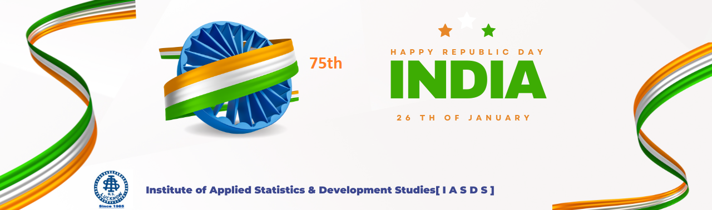
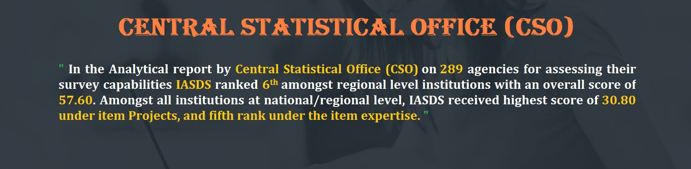
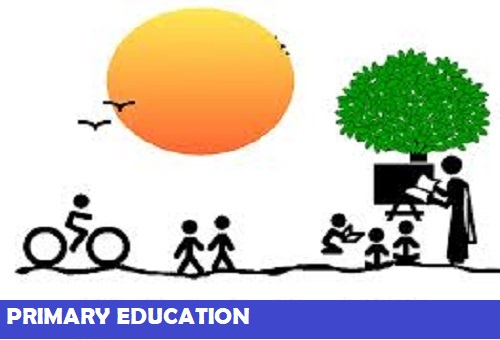
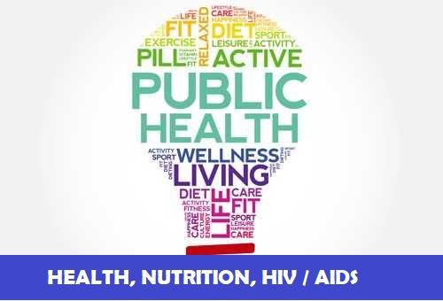

( Registered under Societies’ Registration Act. 1860, Registration no. 3458/85-86 dated 26.10.1985 )
| Home | About us | Members | Imcumbency | Our work | Gallery | Contact us |
|---|


| contact: | E-mail: | About us: | ph no. | |||||||
|---|---|---|---|---|---|---|---|---|---|---|
| Institute of Applied Statistics & Development Studies[ I A S D S ] ( Registered under Societies’ Registration Act. 1860, Registration no. 3458/85-86 dated 26.10.1985 ) |
||||||||||
|
||||||||||
|  | ||||||||||
|  | ||||||||||
|
 | |
 | |||||||
 Late Prof. A.R. Roy Founder Director/ Member Secretary October 1985 to May 01, 1990 |
Professor Anadi Ranjan Roy (1920-1990) took M.Sc. Degree in Pure Mathematics in 1942 and in Statistics in 1944, both from Calcutta University. After completing his postgraduate, he joined the Indian Council of Agricultural Research and rose to the position of Professor of Statistics there. During his stay at Calcutta, he had the privilege of being taught by Professor P.C. Mahalanobis, Professor R.C. Bose, and Professor P.K. Bose among others. Subsequently, he proceeded to USA for doctoral degree from Stanford University on a Fulbright Grant where he worked with several stalwarts including Professor Charles Stein, Herman Chernoff, and Meyer Girshick. His teachers and research associates/supervisors were highly impressed by his research work and potentials. In 1959, he joined the Department of Statistics, Lucknow University as Professor and Head and continued to hold the position till his retirement in 1980. |
LEGAL STATUS Registered: Under Societies Registration Act. 1860, Registration no. 3458/85-86, valid till 25.10.2025 PAN Card Details: AAATI0945C 12A: IASDS is registered under 12A of Income Tax - Registration No.AAATI0945CE20218 dated 23.09.2021 for Five Assessment year 2022-23 to 2026-27. 80 G Donation Exempted: IASDS is registered under 80G of Income Tax - Registration No.AAATI0945CF20190 dated 23.09.2021 for Five Assessment year 2022-23 to 2026-27. NITI AAYOG registration ID: UP/2012/0052417 DSIR: Recognized by DSIR vide letter no. 13/293/2016-TU-V dated 07/10/2016 |
OUR PUBLICATION 


|
MEMORANDUM OF ASSOCIATION 
|
|---|
| ONGOING PROJECTS |
End line Assessment of "To Improve the reproductive health of adolescent girls and women in age group on: 2023 Source of fund: Vatsalya, Lucknow |
|---|
OUR WORK IN VARIOUS STATES OF INDIA |
STATES |
|---|
| Testimonials We had invited Professor A.K. Nigam to the Academy to help us in rendering the statistical advice for finalizing our All India Report on Land Refprms. He is extremely knowledgeable and his presence in the workshop would be very helpful for the future of this project. CHAIRMAN, LAND REFORMS UNIT, LAL BAHADUR ACADEMY OF ADMINISTRATION, MUSSOORIE |
WHY CHOOSE US?
|
|---|
| HOME ABOUT US MEMBERS INCUMBENCY |
OUR WORK GALLERY CONTACT US |
LOCATION: 1st Floor, 1/220 Virat Khand, Gomtinagar, Lucknow, 226010 Main Campus |
FIND US ON: CALL US ON: +91-522-2304849 |
|---|
| v© 1985 - 2019 Institute of Applied Statistics & Development Studies[ I A S D S ] - All Rights Reserved.SFSN |
|---|